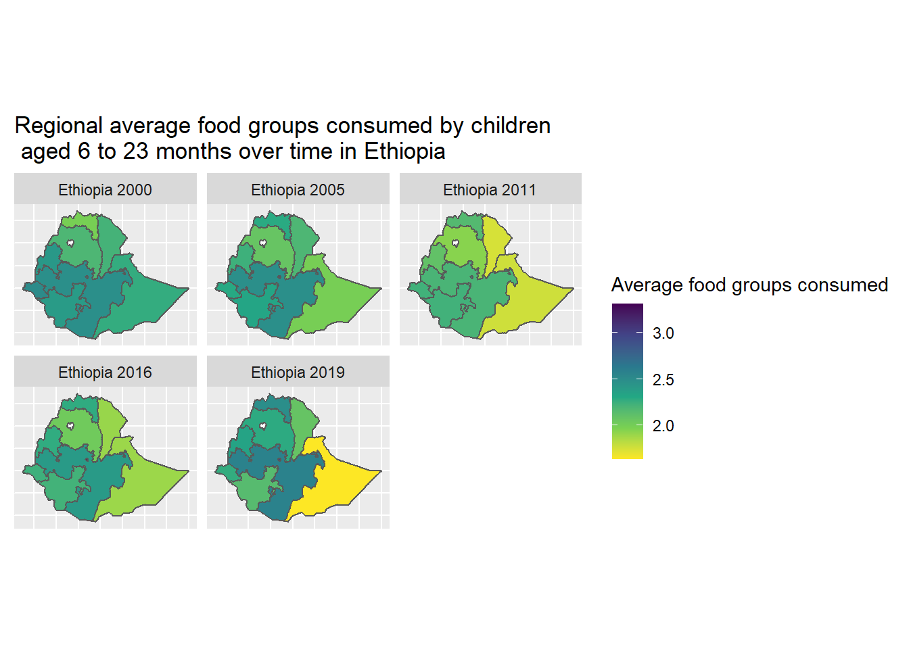

# Load in necessary libraries
library(ipumsr)
library(sf)
library(ggplot2)
library(dplyr)
library(tidyr)
library(janitor)
# Load IPUMS DHS extract
dhs_microdata <- read_ipums_micro(
ddi = "data/dhs/idhs_00050.xml",
data_file = "data/dhs/idhs_00050.dat.gz",
verbose = FALSE
)Meeting dietary needs in early life is vital for human development and well-being. Child malnutrition before 24 months of age is particularly impactful on physical and cognitive health and human capital in later life stages1,2.
The main three indicators measuring dietary adequacy, developed by the World Health Organization, are minimum dietary diversity (MDD), minimum meal frequency (MMF), and minimum acceptable diet (MAD). Meal frequency is a proxy for under-nutrition and dietary diversity represents whether the child’s diet provides adequate macro-nutrients, while MAD indicates both MDD and MMF are met. For the purposes of this post, we will focus on minimum dietary diversity.
Studies have shown that minimum dietary diversity, a standard measurement developed by the World Health organization, is strongly correlated with multiple dimensions of nutritional status3,4. Minimum dietary diversity is defined as the consumption of foods from 5 out of 8 food groups in the past 24 hours. In many countries, less than a quarter of children meet the standard diet diversity guidelines, and factors such as climate change and conflict threaten to reduce that prevalence even further5. Evidence already indicates that climate change may correlate with reduced dietary diversity6.
This post is designed to introduce researchers to available data for measuring dietary diversity in order to study trends over time and associations with climate change-related events.
How dietary diversity can be measured
In order to capture dietary diversity in a survey, respondents are asked about whether their children have eaten nutritional foods. Respondents are generally asked whether their child was fed certain foods in the past 24 hours, sometimes phrased as “any time yesterday or last night” or “any time yesterday (last 24 hours)” or “yesterday during the day or night”.
While food availability and diets vary across cultures and national boundaries, the types of foods that respondents are asked about in surveys also vary.
The integrated variables available in IPUMS DHS child record data have an important distinction that researchers need to be wary of. You might notice that there are two versions of the feeding questions, one with a naming structure MAFED_24H, like MAFEDGRAIN24H, and other with FED_24H, such as FEDGRAIN24H.
The feeding questions from the individual recode (women’s) file indicate that the mother fed the youngest of her children an item from that food category (MAFEDGRAIN24H). These variables have been attached to children records in the original DHS data - even children who are not the youngest. Though these records have a value that appears to be in universe, the information only refers to whether the youngest child of the mother was fed that food type.
In contrast, variables such as FEDGRAIN24H refer to whether the child themselves consumed a food of that category. For most DHS samples, these questions were only asked of youngest children, though the age limit differs across samples.
DHS Diet Indicators Over Time
In the DHS Guide to Statistics version 6, published in 2006, the supplemental feeding questions were used to calculate the percentage of children who consumed a specific food group in the past day, differentiated by whether the child was currently breastfeeding or not. Starting in Version 7, the DHS Guide to Statistics use the minimum dietary diversity standard from the World Health Organization.
| Version 6 | Version 7 & 7.2 | Version 8 | |
|---|---|---|---|
| Indicator | Percentage of (breastfeeding/non-breastfeeding) children consuming specific foods | Percentage of children meeting minimum dietary diversity guideline | Percentage of children meeting minimum dietary diversity guideline |
| Denominator | Number of (breastfeeding/non-breastfeeding) last children born in the three years preceding the survey to interviewed women and living with the mother | Number of youngest children under 2 years living with the mother who is aged 6-23 months, disaggregated by whether breastfeeding or not | Number of youngest children under 2 years living with the mother who is aged 6-23 months, disaggregated by whether breastfeeding or not |
| Numerator | Number of (breastfeeding/non-breastfeeding) last children who consumed a specific food | Number of youngest children aged 6-23 months living with the mother who were fed 5 out of 8 food groups (minimum 2 feedings of milk per day) | Number of youngest children aged 6-23 months living with the mother who were fed 5 out of 8 food groups |
| How to handle missing values | If in breastfeeding variable, assumed not breastfeeding; in food consumption, cases excluded from numerator but included in denominators | If in breastfeeding variable, assumed not breastfeeding; in food consumption, cases excluded from numerator but included in denominators | If in breastfeeding variable, assumed not breastfeeding; in food consumption, cases excluded from numerator but included in denominators |
Minimum dietary diversity definition
Children aged 6 to 23 months who were fed 5 out of the following 8 food groups in the past day meet the minimum dietary diversity (MDD) guidelines:
- Breastmilk
- Grains, white/pale starchy roots, tubers, porridge, and plantains
- Legumes and nuts
- Dairy products (infant formula, milk, yogurt, cheese)
- Flesh foods (meat, fish, poultry and liver/organ meats)
- Eggs
- Vitamin A rich fruits and vegetables
- Other fruits and vegetables
In “Indicators for assessing infant and young child feeding practices”7, minimum dietary diversity was defined as having received 4 out of 7 food groups. In 2017 this definition was changed to 5 out of 8 food groups as breastmilk was included as an additional food group8. This change was made to eliminate disparities in the indicator for breastfeeding compared with non-breastfeeding children.” (DHS Guide to Statistics version 7.2)
##Calculating the MDD indicator using R
We will use Ethiopia DHS surveys from 2000 to 2019 as an illustrative example, loading in an IPUMS DHS extract and bringing in the necessary libraries for our research example later.
The DHS questionnaires modify the standard questionnaire to include culturally-specific food groups, and the DHS guide to statistics instructs analysts to include the country-specific food types into the appropriate food groups above. For example, products made from teff (Ethiopia) should be included in grain foods.
First, we recode the DHS diet variables into indicators for the food groups outlined in the WHO dietary diversity guidelines.
#Create indicators for whether the youngest child consumed something from each of the 8 food groups in the past 24 hours
#a)Breastmilk
dhs_microdata <- dhs_microdata %>%
mutate(breastmilk = case_when(BRSFEDUR==95 ~ 1))
#b)Grains, cereals, tubers, porridge, and teff products
dhs_microdata <- dhs_microdata %>%
mutate(grains = case_when(MAFEDCEREAL24H==1 | MAFEDGRAIN24H==1 | MAFEDTUBER24H==1 | MAFEDPORR24H==1 | MAFEDTEFF24H==1 ~ 1))
#c)Legumes and nuts
dhs_microdata <- dhs_microdata %>%
mutate(nuts_legumes = case_when(MAFEDLEGUM24H==1 | MAFEDNUTS24H==1 ~ 1))
#d)Dairy products (infant formula, milk, yogurt, cheese)
dhs_microdata <- dhs_microdata %>%
mutate(dairy = case_when(MAFEDFORM24H==1 | MAFEDGENMILK24H==1 | MAFEDCHEESE24H==1 | MAFEDYOGURT24H==1 ~ 1))
#e)Flesh foods (meat, fish, poultry and liver/organ meats)
dhs_microdata <- dhs_microdata %>%
mutate(meat = case_when(MAFEDMEAT24H==1 | MAFEDORGAN24H==1 | MAFEDFISH24H==1 | MAFEDPROTEIN24H == 1 | MAFEDFISH24H==1 | MAFEDBIRD24H ==1 ~ 1))
#f)Eggs
dhs_microdata <- dhs_microdata %>%
mutate(eggs = case_when(MAFEDEGG24H==1 ~ 1))
#g)Vitamin A rich fruits and vegetables
dhs_microdata <- dhs_microdata %>%
mutate(vita = case_when(MAFEDYELVEG24H==1 | MAFEDGRNVEG24H==1 | MAFEDVITAFRUIT24H==1 ~ 1))
#h)Other fruits and vegetables
dhs_microdata <- dhs_microdata %>%
mutate(othfrtveg = case_when(MAFEDOFRTVEG24H==1 ~ 1))
#Calculate the number of food groups consumed in the past 24 hours
dhs_microdata <- dhs_microdata %>%
mutate(foodgroups = sum(breastmilk, grains, nuts_legumes, dairy, meat, eggs, vita, othfrtveg, na.rm = TRUE))
#Create an indicator for whether the child consumed foods from 5 or more food groups and assign to 1; zero otherwise
dhs_microdata <- dhs_microdata %>%
mutate(MDD = case_when(foodgroups >= 5 ~ 1, foodgroups < 5 ~ 0))Changes over time
Protein sources, notably eggs, were indicated together in the supplemental feeding module in DHS surveys. Starting in 2005, some surveys were fielded with animal protein sources (meat, poultry, or fish) separate from a variable to indicate consumption of eggs. From this point on, eggs were counted as its own food group for calculating MDD. This limits our ability to create a comparable indicator between samples before and after 2005. If a comparable indicator is central to the goal of your analysis, you could combine eggs and other protein sources into one indicator, and count the number of food groups out of 7. Bear in mind that a count out of seven food groups is no longer minimum dietary diversity as currently defined by the World Health Organization, but the estimates will be comparable over time if universe differences are reconciled, as we will address below.
Differences in variable sub-population
The skip logic pattern for feeding variables differs across surveys, and causes the variable universe (or sub-population of children in this variable) to differ. Variable universes are empirically tested by IPUMS DHS and can be found on the Universe tab (see this video tutorial about IPUMS DHS variable documentation for more information) for each integrated variable on their website. Because of their wider availability across IPUMS DHS samples, we will focus on the MAFED* variables. Below is an example of universe differences over time:
Ethiopia 2000: Children born in the 5 years before the survey to women age 15-49 whose last-born child under age 5 is still alive.
Ethiopia 2016: Children born in the 5 years before the survey to women age 15-49 with at least one surviving child under age 2 living with them.
The 2000 Ethiopia DHS survey includes questions on food consumption for the last-born surviving child up to age 5. In Ethiopia 2016, the mother is asked about the food consumption of her last born child under age 2, if that child is living with her. This will mean for both samples that children under 5 years old who were not last born will still have a valid response in the MAFED* variables. However, in Ethiopia 2016, the response for all children older than 2 years or not-youngest children is in reference to their youngest sibling. In Ethiopia 2000, this variable will contain information on last-born children for all children up to age 5.
Because older children are included in the skip logic in Ethiopia 2000, the sub-population of youngest children will differ between these two samples and will not give us a comparable indicator.
There is also a difference introduced in Ethiopia 2016 that the last-born children must be living with the mother.
We can easily impose a consistent universe across these samples by restricting only to the definition of MDD and analyzing only children aged 6 to 23 months living with their mother.
#Keep only children under 2 years old
dhs_microdata <- dhs_microdata %>%
dplyr::filter(KIDCURAGE < 2)
#Keep only children who live with their mother
dhs_microdata <- dhs_microdata %>%
dplyr::filter(KIDLIVESWITH == 10)
#Drop children who are not alive
dhs_microdata <- dhs_microdata %>%
dplyr::filter(KIDALIVE == 1)
#Restrict to youngest born children
dhs_microdata <- dhs_microdata %>%
group_by(SAMPLE, CASEID) %>%
filter(row_number() == 1 | CASEID != lag(CASEID))The code above should be applied to Ethiopia 2000 to address both the difference in age restriction and the co-residence restriction to align with Ethiopia 2016. We would also apply the same code to Ethiopia 2016 to not include records of children who are not last-born, not living with their mother, and/or not alive. Without addressing the universe difference, we may observe a spurious trend of dietary diversity if there is a systematic difference between the number of food groups older last-born children eat compared to last-born children age 6 to 23 months, or whether the inclusion of children not living with the mother in the 2000 survey might influence the estimate.
Dietary diversity over time in Ethiopia
Creating a comparable count of food groups over time
The code below creates a modified count of food groups in which all protein sources are counted in one group so that the count of food groups is comparable between Ethiopia 2000 and subsequent surveys.
#Create a variable that equals 1 if the child consumed any animal protein or egg in the past 24 hours
dhs_microdata <- dhs_microdata %>%
mutate(meateggs = case_when(MAFEDEGG24H==1 | MAFEDMEAT24H==1 | MAFEDORGAN24H==1 | MAFEDFISH24H==1 | MAFEDPROTEIN24H == 1 | MAFEDFISH24H==1 | MAFEDBIRD24H ==1 ~ 1))
#Calculate the number of food groups the child consumed, with meat and eggs counting as one category.
#The maximum number of food groups is seven.
dhs_microdata <- dhs_microdata %>%
mutate(foodgroups_com = sum(breastmilk, grains, nuts_legumes, dairy, meateggs, vita, othfrtveg, na.rm = TRUE))As a check for how significant the comparability issue could be, we can analyze cases in a sample that has separate indicators for meat and eggs. Upon closer inspection, the difference between the comparable count of food groups and the minimum dietary diversity definition does not differ greatly for Ethiopia 2005 - less than 1% of cases included children who had eaten both eggs and a different protein source. This may not be true in other contexts.
#Load in the labelled library to create a helpfully-labelled cross tabulation
library(labelled)
#Create a cross tabulation of the indicator for meat consumption and the indicator for egg consumption for Ethiopia 2005
dhs_microdata %>%
mutate(
MAFEDEGG24H = to_factor(MAFEDEGG24H),
) %>%
filter(SAMPLE == 23102) %>%
tabyl(MAFEDEGG24H, meat, show_na = TRUE) %>%
adorn_percentages("all") %>%
adorn_pct_formatting()
#> MAFEDEGG24H 1 NA_
#> No 4.3% 91.0%
#> Yes 0.6% 3.9%
#> Don't know 0.0% 0.1%
#> Missing 0.0% 0.1%
#> NIU (not in universe) 0.0% 0.0%Mapping dietary diversity over time
Using workflows described elsewhere in this blog (see our previous post as an example), we utilize spatially-harmonized shapefiles for Ethiopia to demonstrate comparable changes in indicators over time and across space. For more information on spatial harmonization, see another previous post. The shapefiles are available to download from the IPUMS DHS website.
We can use the comparable count of food groups consumed that we just calculated from DHS surveys conducted in Ethiopia in 2000, 2005, 2011, 2016, and 2019 to analyze patterns in dietary diversity over time in spatially-harmonized subnational regions. We’ll use the person-level weight PERWEIGHT to get weighted estimates representative at the region level and create a new dataframe called foodgroups_by_region.
In this post, we will map first level administrative boundaries. Second-level administrative areas have been predicted using GPS coordinates of DHS clusters, though the variable GEOLEV2 should be used only to connect contextual variables calculated using IPUMS International, and not to calculate estimates at the second-level unit level.
foodgroups_by_region <- dhs_microdata %>%
group_by(sample = as.factor(SAMPLE), geo = as.factor(GEO_ET2000_2019)) %>%
summarise(average_food_groups_com = weighted.mean(foodgroups_com, w = PERWEIGHT, na.rm = TRUE)) %>%
ungroup()
#Read in the spationally-harmonized Ethiopia shapefiles
ethiopia_shapefile <- read_ipums_sf("data/gps/geo_et2000_2019.zip")
#> options: ENCODING=CP1252
#> Reading layer `geo_et2000_2019' from data source
#> `C:\Users\krist108\AppData\Local\Temp\RtmpENv9jB\file4cac5b877ecf\geo_et2000_2019.shp'
#> using driver `ESRI Shapefile'
#> Simple feature collection with 12 features and 3 fields
#> Geometry type: MULTIPOLYGON
#> Dimension: XY
#> Bounding box: xmin: 32.99773 ymin: 3.404137 xmax: 48.00106 ymax: 14.89421
#> Geodetic CRS: WGS 84
#ATTACH SHAPEFILE TO FOOD GROUPS DATA BY REGION ----
foodgroups_by_region <- foodgroups_by_region %>%
mutate(DHSCODE = as.integer(geo))
dhs_shapefile_merge <- left_join(ethiopia_shapefile, foodgroups_by_region, join_by(DHSCODE), relationship="one-to-many")
dhs_shapefile_merge <- subset(dhs_shapefile_merge, !is.na(sample))We then use the ggplot2 library and the facet_wrap function to create a map of weighted average food groups consumed by young children by subnational regions of Ethiopia over time.
Code
dhs_shapefile_merge <- dhs_shapefile_merge %>%
mutate(
sample = to_factor(sample)
)
dhs_shapefile_merge <- dhs_shapefile_merge %>%
mutate(
sample = case_when(
sample == 23101 ~ "Ethiopia 2000",
sample == 23102 ~ "Ethiopia 2005",
sample == 23103 ~ "Ethiopia 2011",
sample == 23104 ~ "Ethiopia 2016",
sample == 23105 ~ "Ethiopia 2019")
)
ethiopia_maps <- ggplot(data = dhs_shapefile_merge) +
geom_sf(aes(fill = average_food_groups_com)) +
facet_wrap(vars(sample)) +
scale_fill_viridis_c(direction = -1, name="Average food groups consumed") +
theme(
axis.title.x = element_blank(),
axis.text.x = element_blank(),
axis.title.y = element_blank(),
axis.text.y = element_blank(),
axis.ticks.x = element_blank(),
axis.ticks.y = element_blank()
) +
ggtitle("Regional average food groups consumed by children \n aged 6 to 23 months over time in Ethiopia")
ethiopia_maps
Notice that the average count of food groups consumed differs vary little across subnational regions in 2000, but the estimates begin to decrease and diverge after 2005. The decline in dietary diversity in the easternmost region, Somali, by 2019 is particularly noticeable. One potential explanation is that a combination of erratic rainfall, internal displacement due to conflict, and high food prices in Somali and neighboring regions could have contributed to food scarcity leading up to this DHS survey9.
Check back soon for a related post on using dietary diversity indicators in a research example!
References
1. Victora, C. G., Adair, L., Fall, C., Hallal, P. C., Martorell, R., Richter, L., & Sachdev, H. S. (2008). Maternal and child undernutrition: Consequences for adult health and human capital. The Lancet, 371(9609), 340–357. https://doi.org/10.1016/S0140-6736(07)61692-4
2. Martín-Rodríguez, A., Bustamante-Sánchez, Á., Martínez-Guardado, I., Navarro-Jiménez, E., Plata-SanJuan, E., Tornero-Aguilera, J. F., & Clemente-Suárez, V. J. (2022). Infancy dietary patterns, development, and health: An extensive narrative review. Children, 9(7), 1072. https://doi.org/10.3390/children9071072
3. Arimond, M., & Ruel, M. T. (2004). Dietary diversity is associated with child nutritional status: Evidence from 11 demographic and health surveys. The Journal of Nutrition, 134(10), 2579–2585. https://doi.org/10.1093/jn/134.10.2579
4. Molani Gol, R., Kheirouri, S., & Alizadeh, M. (2022). Association of dietary diversity with growth outcomes in infants and children aged under 5 years: A systematic review. Journal of Nutrition Education and Behavior, 54(1), 65–83. https://doi.org/10.1016/j.jneb.2021.08.016
5. World Health Organization. (n.d.). Infant and young child feeding. Retrieved July 15, 2025, from https://www.who.int/news-room/fact-sheets/detail/infant-and-young-child-feeding
6. Niles, M. T., Emery, B. F., Wiltshire, S., Brown, M. E., Fisher, B., & Ricketts, T. H. (2021). Climate impacts associated with reduced diet diversity in children across nineteen countries. Environmental Research Letters, 16(1), 015010. https://doi.org/10.1088/1748-9326/abd0ab
7. World Health Organization. (2008). Indicators for assessing infant and young child feeding practices: Part 1: Definitions: Conclusions of a consensus meeting held 6-8 November 2007 in Washington D.C., USA. Indicadores Para Evaluar Las Prácticas de Alimentación Del Lactante y Del Niño Pequeño: Conclusiones de La Reunión de Consenso Llevada a Cabo Del 6 Al 8 de Noviembre de 2007 En Washington, DC, EE.UU, 19. https://iris.who.int/handle/10665/43895
8. World Health Organization. (2017). Global nutrition monitoring framework: Operational guidance for tracking progress in meeting targets for 2025. World Health Organization. https://iris.who.int/handle/10665/259904
9. Food and Agriculture Organization of the United Nations. (n.d.). Ethiopia: Integrated food security phase classification snapshot july 2019 - june 2020 KORE - knowledge sharing platform on resilience food and agriculture organization of the united nations. Retrieved August 4, 2025, from https://www.fao.org/in-action/kore/news-and-events/news-details/en/c/1251985/